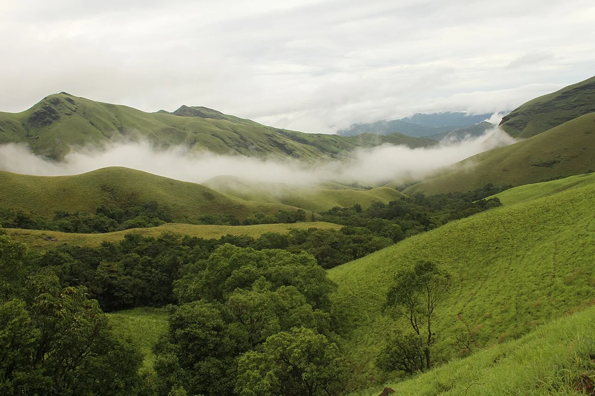
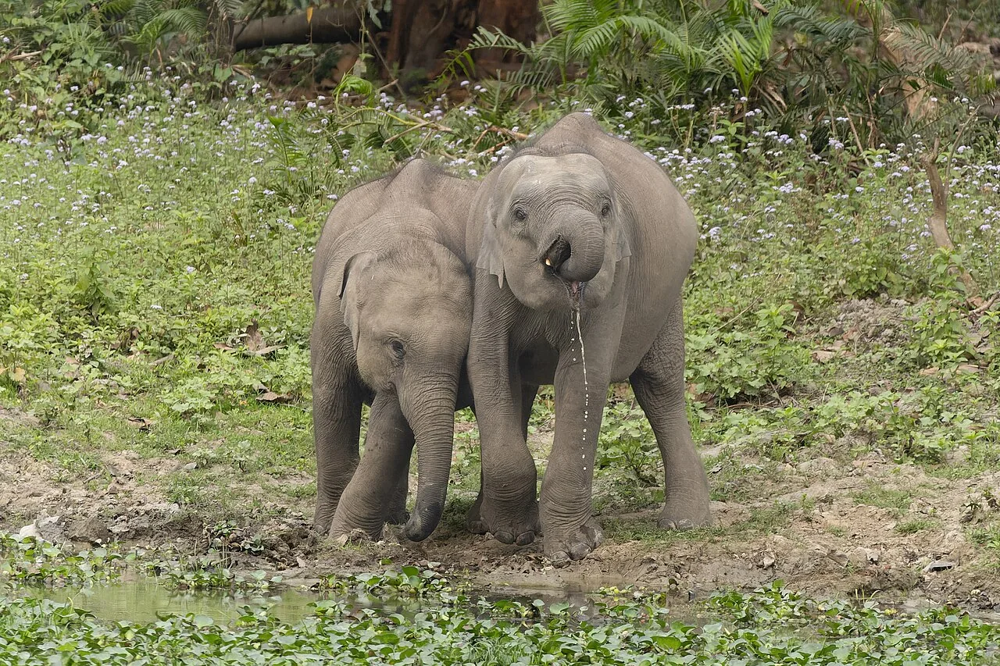
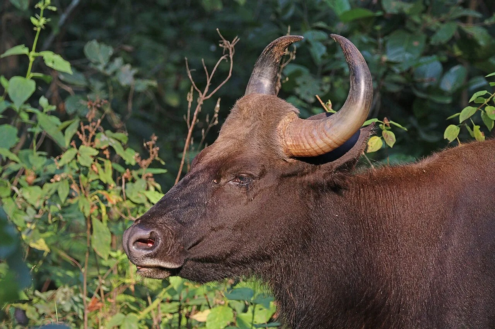
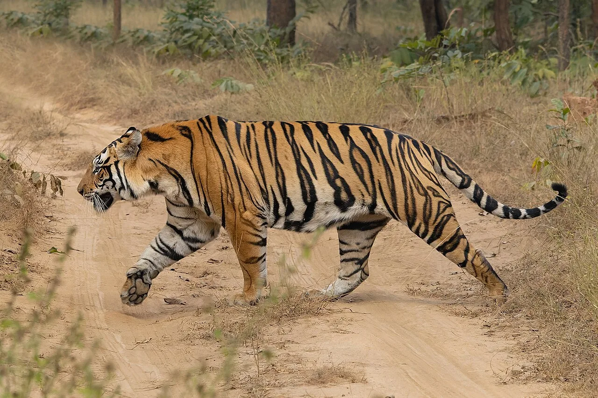
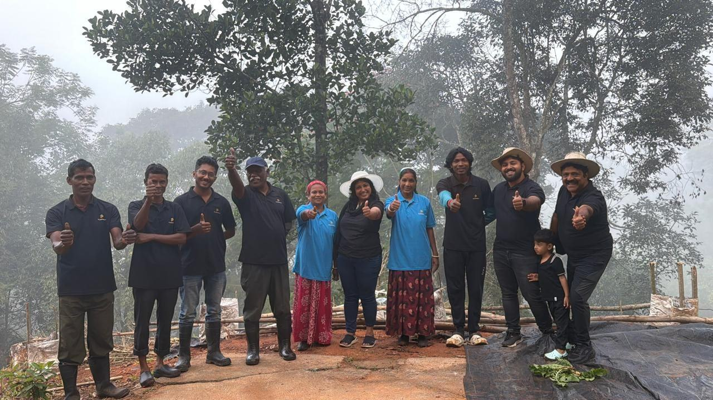

Shade-grown agriculture
Trees and crops share the plantation landscape, shaping the environment in which coffee and spices grow.
An agricultural landscape connected to the biodiversity of the Western Ghats.
Coffee, pepper, cardamom and other crops grow within an environment shaped by shade trees, rainfall, soil and biodiversity.
Our approach values the relationship between agricultural production and the natural systems that support it.
Trees and crops share the plantation landscape, shaping the environment in which coffee and spices grow.
Understanding the soil is part of understanding the farm, from the roots below to the canopy above.
Space for native vegetation is part of a landscape that extends beyond cultivated crops.
The rhythms of rainfall and the surrounding landscape are closely connected to daily farming.
The surrounding habitats support a wider web of life. Quiet observation keeps that relationship respectful.
Environmental stewardship is shared work, including plastic cleanups and care for the surrounding landscape.

Within the farm landscape, a protected grassland area contributes to the natural environment and provides space for native wildlife.
This landscape is part of our commitment to maintaining a relationship between agriculture and nature.
Wildlife activity in the surrounding landscape is influenced by natural habitats and seasonal movement. Sightings are never guaranteed.



Species included from the supplied farm and regional wildlife list; farm-specific occurrence needs confirmation. Wildlife encounters are not offered as a guaranteed visitor activity.
From the forest canopy to wooded waterways, discover a regional collection of birdlife.
A regional birdlife collection, based on the species list supplied for the farm and surrounding landscape. Farm-specific records require confirmation; images are illustrative and sightings are never guaranteed.
Observe quietly. Leave the birds undisturbed.
Keep your distance, avoid disturbing wildlife, and never use playback calls or music to attract birds. Binoculars help you see more while staying further away.
Our farm team and community members participate in initiatives that support environmental stewardship, including plastic cleanup activities and efforts to keep the surrounding landscape clean.
We believe that protecting nature is a shared responsibility. Visitors are part of that story too: keep noise low and take all litter back with you.


Discover the crops and natural habitats of the farm with care for the landscape around you.